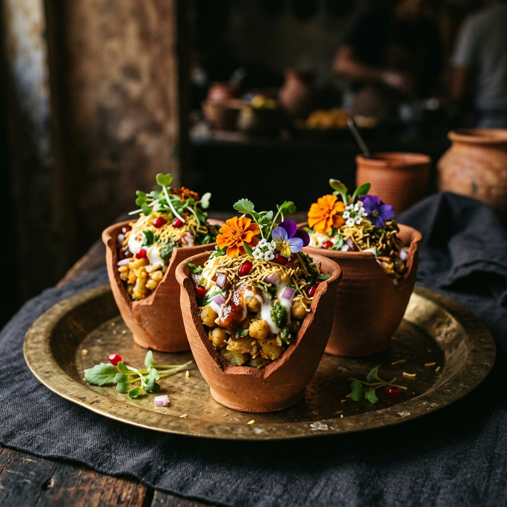

Our Story & Vision

Trailed by Innovation.
A Unit of Food Art Hospitality Pvt. Ltd. | From the House of Girdhars
Food Art Hospitality Pvt. Ltd. is recognized as the industry trailblazer with an unwavering commitment to creativity, innovation, excellence and transforming catering into an art form. FAH creates remarkable experiences by utilizing the finest ingredients and cutting-edge techniques to create fresh, vibrant cuisine coupled with world-class service.
The visionary founders of FAH have added another feather to their cap by launching "Petite Fête", which celebrates the favorite flavors of global street food. Petite Fête takes you on an unparalleled cultural culinary voyage like never before. This eclectic blend of bespoke luxury and fun food has already created a stir in the industry and aims to reach the pinnacle with its new age molecular gastronomy.
Classic street food in a new avatar is sure to deliver the surprise and tantalize your taste buds. Petite Fête has reinterpreted this culture through its lens of creativity while retaining the authenticity of each dish. The avant-garde brand will make you explore the world's culinary heritage through its theatrical food stations with an exquisite fine dining setup.
"Your Vision, Our Passion!"
Our Core Philosophy
1. Cultural Honesty
We never dilute regional flavors. Our spice recipes are sourced directly from street side families, executed using authentic techniques like open clay coal pits and iron griddles.
2. Immersive Scenography
Our food stations are works of art. We work with interior designers to design setups incorporating travertine stone, custom clay structures, brass screens, and luxury candlelight layouts.
3. Theatrical Service
Chefs operate as performance artists, finishing dishes in front of guests with culinary showmanship—liquid nitrogen freezing, smoking herbs, and hand-shaving truffles.
"A feast should be a shared cultural pilgrimage."
"Food is memory. When we bite into a perfectly crisp kachori or smell wood-smoke, we are immediately pulled back to a specific street corner, a specific time, and a specific mood. We built Petite Fête to recreate those transportative culinary moments for the most beautiful celebrations in the world."
— Aarav & Elena Mehta, Founders